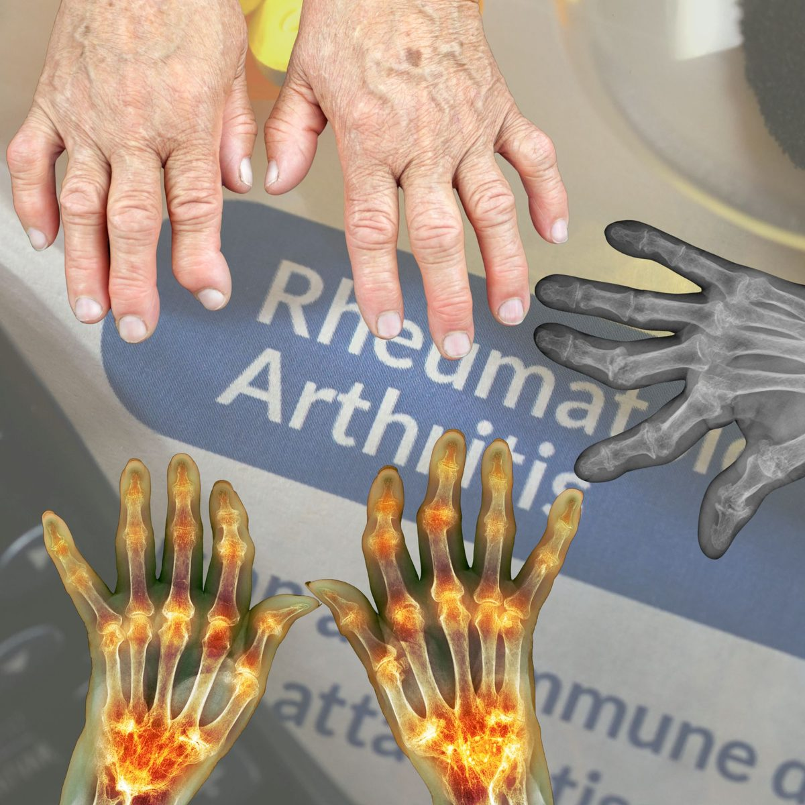

Stiff, Swollen Joints Every Morning? Rheumatoid Arthritis Explained: Symptoms, Causes & Treatment
You wake up and your hands feel like they belong to someone else. The knuckles are stiff, swollen and sore, and it takes an hour or more before you can make a proper fist or open a jar. By lunchtime it eases, only to return the next morning. Many people put this down to “rheumatism”, to age, or to too much housework, and wait months before seeing a doctor. But when stiffness and swelling affect the small joints of both hands, it may be rheumatoid arthritis, and the good news is that treatment started early can protect your joints for life.
What Is Rheumatoid Arthritis?
Rheumatoid arthritis (RA) is a long-term autoimmune disease. This means the immune system, which normally defends us against infections, mistakenly attacks the body’s own tissues. In RA the target is the synovium, the thin lining inside our joints. It becomes inflamed and thickened, produces excess fluid, and over time can erode the cartilage and bone, loosen the tendons and deform the joint.
It is not the same as osteoarthritis, the “wear and tear” arthritis that comes with age and use. RA is a disease of inflammation, and it can affect the whole body, not only the joints. You can read the differences in our article on osteoarthritis versus rheumatoid arthritis.
The Warning Signs of Rheumatoid Arthritis
RA usually creeps in over weeks to months. The typical pattern is:
- Pain, warmth and swelling in the small joints, especially the knuckles and middle joints of the fingers, the wrists, and the balls of the feet. The joints feel “boggy” and tender when squeezed.
- Both sides are affected, for example both hands or both wrists at the same time.
- Morning stiffness lasting more than 30 to 60 minutes. In osteoarthritis, morning stiffness usually clears in under 30 minutes. Stiffness in RA may also return after a long rest.
- Tiredness and feeling unwell, sometimes with a low fever, loss of appetite and weight loss.
- Pain that improves with movement and is worse after rest, the opposite of mechanical pain.
As the disease advances without proper treatment, fingers can drift sideways, bend into abnormal shapes (the swan-neck and “boutonnière” deformities), and the hands lose strength and dexterity, as in the photographs above.
It Is More Than a Joint Disease
Because RA is a disease of the immune system, inflammation can reach other parts of the body. Not everyone is affected, but it is important to know about:
- Rheumatoid nodules: firm lumps under the skin, often near the elbows or fingers.
- Dry eyes and dry mouth, and sometimes red, painful eyes.
- Lungs: inflammation or scarring that can cause a persistent dry cough or breathlessness.
- Heart and blood vessels: people with RA have a higher risk of heart attack and stroke, which is why blood pressure, cholesterol and smoking matter so much.
- Anaemia (low blood count) from long-standing inflammation.
- Thin bones (osteoporosis), from the disease itself and from some of its treatments.
What Causes Rheumatoid Arthritis?
There is no single cause. RA appears when a person who is genetically predisposed meets one or more triggers. Known risk factors include:
- Sex and age: RA is two to three times more common in women, and most often begins between 30 and 60 years of age, although it can start at any age.
- Family history: having a close relative with RA or another autoimmune disease raises the risk, but most people with RA have no affected relative.
- Smoking: the strongest lifestyle risk factor. It also makes the disease more severe and treatment less effective.
- Excess weight and long-term exposure to dust or silica.
- Gum disease may also play a role in some people.
RA is not contagious, and it is not caused by cold weather, sitting in a draught, or eating a particular food, although many patients feel their joints are worse in damp or cold conditions.
How Is It Diagnosed?
There is no single test for RA. Diagnosis combines several pieces of information:
- Your story and a careful examination of your joints, looking for swelling, warmth and tenderness in the typical pattern.
- Blood tests: rheumatoid factor and anti-CCP antibodies (anti-CCP is more specific for RA), together with inflammation markers (ESR and CRP), a full blood count, and kidney and liver tests. Around one in five people with RA have negative antibody tests, so a normal result does not rule it out.
- Imaging: X-rays of the hands and feet, and sometimes ultrasound or MRI, which can show inflammation and early damage before it appears on X-ray.
- Ruling out look-alikes, such as osteoarthritis, gout, lupus, psoriatic arthritis, fibromyalgia and joint pain after viral infections.
Before starting some treatments, your doctor will also screen for infections such as hepatitis B, hepatitis C and tuberculosis, because they can flare up when the immune system is calmed.
Why Early Treatment Matters
The first months after RA begins are often called the “window of opportunity”. Joint damage can start early, and once bone is eroded it cannot be rebuilt. Treatment begun in the first three to six months gives the best chance of reaching remission, meaning little or no disease activity, and of avoiding permanent deformity. If you have had swollen joints for more than six weeks, do not wait: see a doctor.
How Is Rheumatoid Arthritis Treated?
The aim is clear: stop the inflammation, keep you moving, and prevent damage. Your doctor will adjust treatment regularly until the disease is controlled, and then keep it controlled. The main medicines are:
- Disease-modifying anti-rheumatic drugs (DMARDs). These are the foundation of treatment. They do not just ease pain, they slow or stop the disease. Methotrexate is usually the first choice, taken once a week (never daily) together with folic acid. Others include leflunomide, sulfasalazine and hydroxychloroquine. They take weeks to months to work, so patience is needed, and regular blood tests keep them safe.
- Biologic and targeted medicines. If DMARDs are not enough, newer treatments that block specific parts of the immune response (given by injection or infusion, or by tablet in the case of JAK inhibitors) can be added. They are very effective but are more expensive and require screening and monitoring for infections.
- Corticosteroids (such as prednisolone), in small doses and for a short time, to calm a flare or to bridge the weeks before DMARDs start working. Long-term use is avoided because of side effects.
- Anti-inflammatory painkillers (NSAIDs) can ease pain and stiffness, but they do not protect the joints and can affect the stomach, kidneys and heart, so they are used sparingly and under medical advice.
Joint injections, physiotherapy, occupational therapy and, in advanced cases, surgery to repair or replace damaged joints also have a role.
Important: never stop or change your RA medicines on your own, even when you feel well. Feeling well usually means the treatment is working.
Daily Habits That Help
- Stop smoking. It is the single most helpful lifestyle change for RA and for your heart.
- Stay active. Gentle, regular exercise such as walking, swimming, cycling and stretching keeps joints flexible and muscles strong. Rest during flares, but do not stop moving altogether.
- Protect your joints. Use larger joints for tasks (carry bags on your forearm, not your fingers), use jar openers and thick-handled utensils, and pace your day.
- Keep a healthy weight, which eases pressure on joints and improves response to treatment.
- Eat a balanced diet rich in vegetables, fruit, whole grains and fish. No special diet cures RA, and supplements should not replace your prescribed treatment.
- Look after your bones and heart: calcium and vitamin D as advised, and regular checks of blood pressure, cholesterol and bone health.
- Keep vaccinations up to date (flu, pneumonia, COVID-19) as advised by your doctor, since some RA medicines lower your defences against infection.
- Look after your mood. Living with a long-term, painful condition is hard. Talk about it with your doctor, family and friends.
Planning a Pregnancy?
RA often affects women in their childbearing years. Some RA medicines, notably methotrexate and leflunomide, must be stopped well before conception because they can harm an unborn baby, while others are considered safe. If you are pregnant or planning to be, speak to your doctor first so that the treatment can be adjusted safely. Do not stop medicines on your own.
When to Seek Medical Help Quickly
See a doctor promptly, or go to the hospital, if:
- 🔴 A single joint becomes suddenly hot, red and very swollen, with fever or chills, especially if you take RA medicines: a joint infection must be ruled out urgently.
- 🔴 You develop a fever, cough or other signs of infection while on immunosuppressive treatment.
- 🔴 New shortness of breath, a persistent dry cough or chest pain.
- 🔴 Severe neck pain with tingling, numbness or weakness in the arms or legs, which can be a sign of instability in the upper neck in long-standing RA.
- 🟡 A painful, red eye or sudden change in vision.
- 🟡 Swollen, stiff joints lasting more than six weeks, particularly in both hands or feet and with long morning stiffness.
- 🟡 A flare that does not settle, or side effects such as mouth ulcers, persistent nausea, unusual bruising or yellowing of the skin or eyes.
The Bottom Line
Rheumatoid arthritis is a serious but treatable disease. Twenty years ago, many patients ended up with crippled hands. Today, thanks to earlier diagnosis and modern medicines, most people can reach remission or low disease activity, stay active, keep working and protect their joints. The key steps are to recognise the warning signs, get a proper diagnosis early, start treatment without delay, and keep taking it.
If you have swollen, stiff joints in your hands or feet, especially with long morning stiffness, do not simply call it “rheumatism” and wait. Have it checked.
Always consult your doctor before starting or stopping any medicine, especially if you have other health conditions, take other regular treatments, or are pregnant or planning a pregnancy.
Swollen, stiff joints in your hands or feet, or already living with rheumatoid arthritis? Message directly and ask.
Message on WhatsAppThis article is general health information and does not replace a medical consultation. In a medical emergency, call SAMU (114) or go to your nearest hospital.